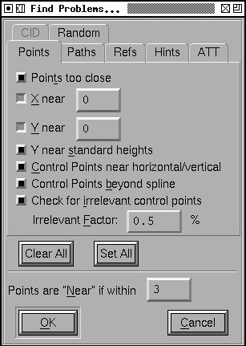
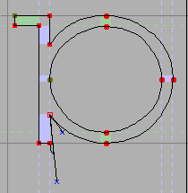
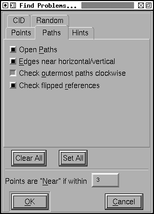
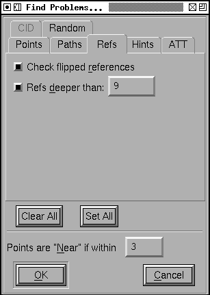
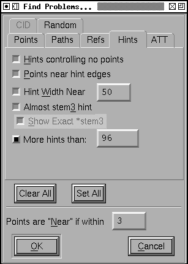
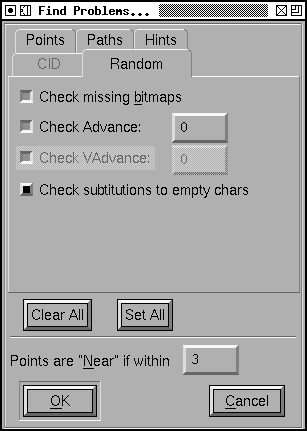
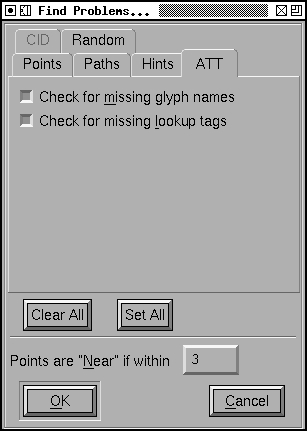
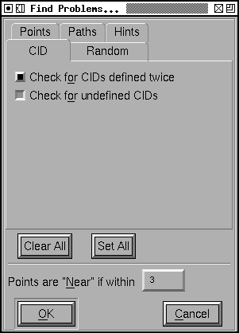

Finding common font problems automagically
Nobody is perfect.
Well, I'm not.
When you draw your glyphs you are likely to make some minor errors, like having stems with slightly different widths in different glyphs, or having lines which aren't quite vertical or...
FontForge's Find Problems command can help track down some common errors. In some cases it will be able to fix things for you, but it won't do so without your permission (who knows, some of the so-called "problems" might actually be what you wanted), but it will point things out to you that you should look at.
This command works either in the font view, the outline view or the metrics view. In the font view it will examine all selected glyphs for errors, and if it finds anything open a window looking at the glyph and post a (non-modal) dialog saying what the error is. You may then correct the problem and press the [Next] button in the dialog when you are done, or you may stop the command with the [Stop] button. Some errors FontForge will be able to fix automagically, and if so there will be a [Fix] button in this dlg (NOTE: You should not assume that all problems are in fact errors. Some "problems" may be intended peculiarities of the font design. Don't just blindly press the [Fix] button). Behavior in the outline and metrics views is similar, except that only one glyph is searched for problems.
FontForge will be able to check for more problems if you:
- AutoHint the font first
- Bring up the Element->Font Info->Private sub-dialog, add entries for BlueValues, StdHW and StdVW and press the [Guess] button for each of them
Note: Some of these problems are geared specifically to the problems of Latin/Greek/Cyrillic fonts. I would be happy to hear of ways to extend these to other script systems, or of problems that are specific to other script systems (fontforge-users@lists.sourceforge.net this is a public mailing list).
FontForge can detect the following potential problems:
Points Too Close
Some of FontForge's own commands get confused by tiny splines, on the order of one unit or less, and anyway if you have several points very close together it is unlikely that they will make a detectable difference when the font is printed. Probably you should remove one of them... If FontForge detects two points on the same path which it deems to be too close it will select both, stop and let you fix things.
X near [val]
Often there will be a set of features which should be consistent across the entire file. For example the left side-bearing of the glyphs "BDEFHIKLMNPR" should perhaps all be the same. This will let you enter in the desired side-bearing value, and then FontForge will find all glyphs with points that are near, but not exactly on the desired value. Where "near" is defined at the bottom of the dialog (in this case, everything within 3 em-units -- in either direction -- will be near). If it finds an errant point, FontForge will select it, stop and let you fix it.
Y near [val]
This is the exact counter-part of the above command except for being in the Y direction. Often times this check is more efficiently done by the following check...
Y near standard heights
In Latin, Greek and Cyrillic alphabets there are certain standard heights that FontForge expects to find: the baseline, the height of lower case letters, the height of capital letters, the height of lower case letters with ascenders (often the same as, or very close to, the capital height), and the depth of lower case letters with descenders. For this command FontForge defines these heights to be 0, the height of "x", the height of "I", the height of "l" and the depth of "p" (If you are working on a Greek or Cyrillic font and don't include the Latin alphabet, FontForge will pick similar letters from your alphabet). Then FontForge will search for any points which are "near", but not on, these heights. Again where "near" is defined at the bottom of the dialog. If it finds such a point, FontForge will select it, stop and let you fix things.
Control points near horizontal/vertical/italic
This is similar to the Edges near Horizontal option below, but where that only looks for straight lines, this one looks for curved lines that begin or end near horizontal (vertical, italic angle).
Control points beyond spline
Consider the glyph at right, the selected point has a control point that is far outside of what is reasonable and is probably not where it should be. This will check for such points.
Technically it will search for all control points, which when projected onto the line between the two end points of the spline lie outside of the segment between the two.
Irrelevant control points
This will look for control points which are so close to the point they modify
that they are unlikely to affect the shape of the curve. A control point
is deemed too close if the distance between it and its modified point is
less than the "Irrelevant Factor" times the distance between the two end
points of the spline controlled by this control point.
Open Paths
All of your paths should be closed, that is they shouldn't have any end points the way a line segment does, but should connect back to their beginning. This is often caused by being a little careless with the last point on a path, and instead of joining it to the first, you just put it near the first. If FontForge detects any open paths it will select the entire path, and stop to let you fix things up.
Intersecting Paths
Both PostScript and TrueType discourage you from having intersecting paths in a font.
Edges near horizontal/vertical/italic
It is very easy to create a line which is almost, but not quite, vertical. This will check for that situation. And for horizontal, and (if your font has an italic angle) for lines which are almost but not quite parallel to the italic angle. If it finds one of these, FontForge will select the two end points, stop and let you fix things.
For horizontal lines it will tell you the y coordinates of the two end-points, for vertical lines it will show you the x coordinates.
Path Direction
Both PostScript and TrueType require that paths be traced in a clockwise fashion. This sometimes doesn't matter, but many rasterizers do a better job if this rule is obeyed. This command will detect whether this constraint is violated.
FontForge cannot determine path direction properly if there are self-intersecting paths. Do that test first.
Currently the command will report the same error several times if you do not fix the problem. That's sort of a bug, but I don't see an easy way around it yet.
More Points Than
Appendix B of the PostScript Language Reference manual says that an interpreter
is only required to support paths with 1500 points on them. Most interpreters
actually have a much higher limit, so you may change the limit to suit your
desires. I believe that control points are included in the count. Note that
when checking a quadratic font (ie. a truetype font) there will be at most
one control point between any two end points, but when that font gets converted
to PostScript there will be two. FontForge currently counts this as one point).
TrueType has no such limit.
Flipped References
As mentioned above both PostScript and TrueType like clockwise paths. If you have a flipped reference then either the reference or the original glyph will be drawn with a counter-clockwise path. To fix it you should Edit->Unlink the reference and Element->Correct Direction
Refs with bad ttf transformation matrices
The TrueType glyph format allows almost arbetrary transformations to be applied to a reference. The one restriction is that all terms of the transformation matrix (except for the translation terms) must have a value between -2 and 2.
If you have a reference with an unexpressable transformation matrix, fontforge will expand the reference inline, so all the contours will be present they just won't be in a reference.
Mixed contours and references
In TrueType glyphs may be composed either of all references or all contours (a reference with an unexpressable transformation matrix counts as a contour).
If you have a mixed glyph, fontforge will expand all references inline.
Refs with bad ps transformation matrices
The Type1 font format only allows references to be translated (so no rotation or scaling is permitted). Technically the Type2 format does not allow any references at all, but they can be simulated by using subroutines, which also cannot be rotated or scaled.
If you have a reference with an unexpressable transformation matrix, fontforge will expand the reference inline, so all the contours will be present they just won't be in a reference.
Refs Deeper Than
Appendix B of the the Type2 spec says that an interpreter is only required to support subroutine nesting up to 10 levels. FontForge uses subroutine calls to handle referenced glyphs and sometimes also to handle hinting. Hinting will take up a maximum of 1 level of subroutine calls leaving 9 available for references. TrueType has no such limit.
Refs with out of date point matching
TrueType allows references to be positioned by aligning points in different
references. If the point count in one of the glyphs being referred changes
then you will need to fix up these references to match the new point
count.
Hints controlling no points
This is a bit esoteric, and is present to provide a work-around for (what I think is) a bug in ghostview. Consider the following glyph


The first two images show the glyph with no hints, first as seen in FontForge,
then as displayed by ghostview. The result looks good. If we add hints to
the two curved stems then ghostview gets very confused. I don't know enough
about hints to know whether there should be hints there. But this command
will detect this problem if in fact it is a problem. If FontForge finds this
it will select the offending hint and allow you to fix things (probably the
best fix is to add curved points at the extrema of all the curved splines,
this is actually recommended by adobe anyway
(T1_Spec.pdf
section 4.1)).
Points near hint edges
If you have a glyph like "H" where the main vertical stems are broken by the cross bar, it is all too easy to make the top part of the stem a slightly different width than the bottom. (The hinting process figures out all the stems.) So this command, in essence, is looking for points which are slightly off from a stem. (again, near is defined at the bottom of the dlg). If FontForge finds such a point it selects it, stops, and allows you to fix it up.
Hint width near [val]
Usually one wants many of the glyphs to have a constant stem width, and this command will check that all stems near the indicated value are that value (again near is defined at the bottom of the page). If FontForge finds a bad stem it will select it, stop and allow you to fix things.
Almost stem3 hint
Postscript has a special hint operator (hstem3 and vstem3) which is designed to hint the stems of things like "m" where there are three stems of equal width and equally far apart. It is easy for a glyph not to fit the criteria for this operator (which means FontForge won't use it). This will detect cases that are close to right. I found that I needed to adjust the "Near" value to be bigger than the default.
Show exact stem3
(this is not a problem, but I found it helpful to be able to distinguish between cases where the "almost stem3" above didn't say anything. It might be because it was a stem3 or it might be really far off from a stem3)
More Hints Than
Appendix B of the the Type2 spec says that an interpreter is only required to support a total of 96 horizontal and vertical hints.
Missing Bitmaps
Look through the associated bitmap fonts, and find if there is a bitmap font which is missing versions of glyphs present in the outline font. Conversely look for bitmap fonts with glyphs which are not present in the outline font.
Multiple Unicode
Check that you do not have two glyphs assigned to the same unicode code point. (The unicode encoding is used to determine which glyph will appear in the truetype/opentype 'cmap' table. If you have two glyphs with the same code point, there is no guarantee which will be used.)
Multiple Name
Check that you do not have two glyphs with the same name.
Check for any glyphs whose advance width is not the specified value (useful for a mono-space font where you want to check that all glyphs have the same width).
Check Vertical Advance
Check for any glyphs whose vertical advance (for fonts with vertical metrics) differs from the specified value.
Check substitutions for empty chars
Looks through all the 'GSUB' substitution, alternate substitution, multiple
substitution and ligature entries that are attached to the current glyph
and checks to make sure that all the named components are present in the
font (and contain something).
Missing Glyph Names
It is possible to create a substitution, ligature, etc. which refers to a glyph name that is not in the font. This option will check for the above error.
Missing Lookup Tags
It is possible to create a contextual feature which refers to a lookup tag which does not exist in the font. This option will check for that error.
Using 'DFLT' Script
OpenType has depreciated the use of 'DFLT', but FontForge will sometimes use it when it can't make a better guess at the appropriate script for a glyph without an innate script.
If your font is a CID keyed font you will also get:
Check for CIDs defined twice
Looks through the font set to see if there are any CIDs which have valid glyphs in two or more fonts.
Check for undefined CIDs
Looks for CIDs which have no glyphs defined for them in any font. This is
a fairly common occurrence in CID fonts, so use this with
caution.
At the bottom of the dialog are two buttons ([Clear All] and
[Set All] which will, respectively, clear and set the check
boxes for all tests -- Well, CID tests will not be set by [Set
All] in non cid-keyed fonts).
There is also a text field which allows you to define the meaning of "Near" as used in various of these tests. The default value is that things are "near" if they are within 3 em-units of the desired value and not equal to that value.